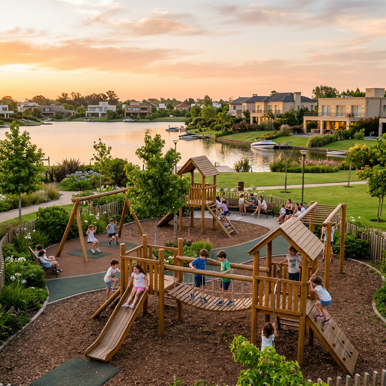

Pregúntale a cualquier padre que viva aquí y te dirá lo mismo: "Me mudé para que mis hijos pudieran jugar en la calle". Esa frase, que parece de otra época, es la realidad diaria en Villanueva. Si estás buscando venta de casas en Villanueva, seguramente tu prioridad es la seguridad y el desarrollo de tus hijos en un entorno sano.
Villanueva ofrece una "burbuja" de tranquilidad donde los niños recuperan la libertad perdida en las grandes ciudades, pero con todas las comodidades modernas.
1. Seguridad: La Base de la Libertad
El sistema de doble control de acceso y el patrullaje constante permiten que los niños puedan circular en bicicleta entre las casas de sus amigos o ir a la plaza del barrio con una independencia que sería impensable en otro lugar. Esa libertad de movimiento es fundamental para el desarrollo de su confianza y autonomía.
2. Amigos a un "Timbrazo" de Distancia
La densidad familiar de barrios como **Santa Catalina** o **San Francisco** asegura que siempre haya amigos cerca. La vida social de los niños se potencia en las áreas comunes, las piletas del club y las escuelitas de fútbol internas, como la **Escuela de Fútbol River Villanueva**, donde aprenden valores y deporte.
3. Contacto Directo con la Naturaleza
Crecer viendo amanecer en la laguna, observar cisnes y patos, e iniciarse en el kayak desde pequeños les otorga una conciencia ambiental única. No son niños de pantalla; son niños de muelle, de parque y de aire puro.
Colegios y Logística Familiar
Como mencionamos en nuestra guía de educación, la cercanía con instituciones de primer nivel significa que el tiempo de "viaje escolar" es mínimo. Menos tiempo en el chárter o en el auto significa más tiempo para actividades extra-curriculares o, simplemente, para jugar en el jardín.
Casas Diseñadas para Familias
La mayoría de los proyectos en Villanueva priorizan el espacio familiar: amplios playrooms, jardines seguros con piletas protegidas y galerías con parrilla donde se celebran los cumpleaños más memorables. Es una inversión no solo en ladrillos, sino en la infancia de tus hijos.
Mudarse a Villanueva es regalarles una infancia de película. Si querés conocer qué barrios tienen las mejores plazas o la mayor concentración de familias jóvenes, no dudes en consultarnos.
Dale a tus hijos la vida que soñaste
Conocemos los rincones más familiares de Villanueva. Vení a descubrirlos.
Consultanos Ahora